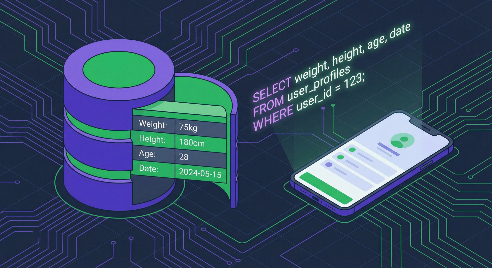

Coach IMG – Version 3
Évolution majeure avec base de données SQLite, historique des mesures et architecture professionnelle
Nouveautés de la Version 3
Cette troisième version de l'application Coach IMG représente une évolution majeure par rapport aux versions précédentes. L'accent est mis sur la persistance robuste des données avec SQLite, l'historique des mesures et une architecture testable.
Base de données SQLite
Stockage professionnel des données avec SQLite, permettant des requêtes complexes et un historique complet
Historique des mesures
Chaque calcul est horodaté avec DateMesure pour suivre l'évolution de l'IMG dans le temps
Architecture en 3 couches
Séparation claire : mobile (UI), mobile.Core (logique) et couche données
Tests unitaires
Projet de tests MSTest pour valider la logique de calcul IMG de manière automatisée
Double persistance
Conservation du Serializer JSON en plus de SQLite pour flexibilité maximale
Requêtes asynchrones
Utilisation de async/await pour des opérations de base de données non-bloquantes
Structure du projet V3
Organisation des fichiers
MauiCoachV3/
├── mobile.slnx # Fichier solution
│
├── mobile/ # 🎨 COUCHE UI (Interface utilisateur)
│ ├── App.xaml / App.xaml.cs # Point d'entrée de l'application
│ ├── AppShell.xaml # Navigation Shell MAUI
│ ├── MainPage.xaml # Interface principale
│ ├── MainPage.xaml.cs # Code-behind avec logique UI
│ ├── MauiProgram.cs # Configuration MAUI
│ ├── mobile.csproj # Projet UI
│ ├── Platforms/ # Code spécifique par plateforme
│ └── Resources/ # AppIcon, Fonts, Images, Styles
│
├── mobile.Core/ # ⚙️ COUCHE MÉTIER (Logique)
│ ├── mobile.Core.csproj # Projet Core (.NET 10)
│ ├── Modele/
│ │ └── Profil.cs # Modèle avec attributs SQLite
│ └── Outils/
│ ├── SQLiteDb.cs # ✨ NOUVEAU: Accès base de données
│ └── Serializer.cs # Sérialisation JSON (conservé)
│
└── test MauiAppCoach/ # 🧪 TESTS UNITAIRES
├── test mobile.csproj
├── MSTestSettings.cs
└── Test1.cs # Tests de calcul IMGAvantages de cette architecture
Séparation des responsabilités
Le projet mobile gère uniquement l'interface XAML.
Le projet mobile.Core contient la logique métier et l'accès aux données.
Testabilité
Le projet test MauiAppCoach peut tester la classe Profil
et les calculs IMG sans dépendance à l'interface utilisateur MAUI.
Réutilisabilité
Le projet Core peut être référencé par d'autres applications (console, web, API) pour partager la logique de calcul et d'accès aux données.
Base de données SQLite
La fonctionnalité majeure de cette V3 est l'intégration d'une base de données SQLite pour stocker l'historique des mesures. Contrairement à la V2 qui sauvegardait uniquement le dernier profil en JSON, la V3 conserve toutes les mesures avec leur date.

Stockage des données utilisateur dans SQLite avec requêtes SQL
Configuration de la connexion
public class SQLiteDb
{
// Nom du fichier de base de données
public const string DatabaseFilename = "dbcoach.db3";
// Chemin complet vers le fichier (stockage local de l'app)
public static string DatabasePath =
Path.Combine(
Environment.GetFolderPath(Environment.SpecialFolder.LocalApplicationData),
DatabaseFilename
);
// Options d'ouverture : créer si inexistant, lecture/écriture, cache partagé
public const SQLiteOpenFlags Flags =
SQLiteOpenFlags.Create |
SQLiteOpenFlags.ReadWrite |
SQLiteOpenFlags.SharedCache;
private SQLiteAsyncConnection connection;
/// <summary>
/// Initialise la connexion et crée la table si nécessaire
/// </summary>
private async Task Initialize()
{
if (connection != null)
return;
connection = new SQLiteAsyncConnection(DatabasePath, Flags);
await connection.CreateTableAsync<Profil>();
}
}Opérations CRUD asynchrones
La classe SQLiteDb fournit des méthodes asynchrones pour les opérations de base de données :
/// <summary>
/// Sauvegarde ou met à jour un profil dans la base de données
/// </summary>
public async Task<int> SaveItemAsync(Profil unProfil)
{
await Initialize();
if (unProfil.Id != 0)
{
// Mise à jour si l'ID existe
return await connection.UpdateAsync(unProfil);
}
else
{
// Insertion d'un nouveau profil
return await connection.InsertAsync(unProfil);
}
}
/// <summary>
/// Récupère le profil le plus récent (trié par date décroissante)
/// </summary>
public async Task<Profil> GetItemsQueryAsync()
{
await Initialize();
return await connection.FindWithQueryAsync<Profil>(
"SELECT * FROM Profil ORDER BY dateMesure DESC"
);
}
/// <summary>
/// Récupère tous les profils pour l'historique
/// </summary>
public async Task<List<Profil>> QueryGetItemsAsync()
{
await Initialize();
return await connection.QueryAsync<Profil>(
"SELECT * FROM Profil ORDER BY id DESC"
);
}Emplacement de la base de données
Android
/data/data/[package]/files/dbcoach.db3
iOS
Library/dbcoach.db3 dans le sandbox
Windows
%LOCALAPPDATA%\[App]\dbcoach.db3
macOS
~/Library/Application Support/dbcoach.db3
Modèle Profil enrichi
La classe Profil a été enrichie avec des attributs SQLite pour le mapping
objet-relationnel et un champ DateMesure pour l'historique.
using SQLite;
[Serializable]
public class Profil
{
// Champs privés
private readonly Nullable<int> id;
private DateTimeOffset datemesure; // ✨ NOUVEAU: horodatage
private int sexe; // 0 = femme, 1 = homme
private double poids;
private int taille;
private int age;
private double img;
private string message;
private string image;
// Constructeur avec tous les paramètres (incluant date)
public Profil(Nullable<int> unId, DateTimeOffset uneDate,
int unSexe, double unPoids, int uneTaille, int unAge)
{
id = unId;
datemesure = uneDate;
sexe = unSexe;
poids = unPoids;
taille = uneTaille;
age = unAge;
CalculIMG();
ResultatIMG();
}
// Constructeur par défaut (requis pour SQLite)
public Profil() { }
// ✨ Clé primaire auto-incrémentée pour SQLite
[PrimaryKey, AutoIncrement]
public int Id { get; set; }
// ✨ Date de la mesure pour l'historique
public DateTimeOffset DateMesure
{
get { return datemesure; }
set { datemesure = value; }
}
// Propriétés pour le mapping SQLite
public int Sexe { get; set; }
public double Poids { get; set; }
public int Taille { get; set; }
public int Age { get; set; }
public double Img { get; set; }
public string Message { get; set; }
public string Image { get; set; }
}Intégration dans l'interface
Le code-behind de MainPage.xaml.cs utilise maintenant SQLite pour
la persistance des données, avec des opérations asynchrones.
Initialisation et restauration
public partial class MainPage : ContentPage
{
private Profil unProfil = null;
private readonly SQLiteDb SQLiteDbCoach = null;
public MainPage()
{
InitializeComponent();
SQLiteDbCoach = new SQLiteDb(); // Initialisation de la connexion
SQLiteSelect(); // Restauration des données
}
/// <summary>
/// Récupère le dernier profil depuis SQLite et pré-remplit les champs
/// </summary>
private async void SQLiteSelect()
{
unProfil = await SQLiteDbCoach.GetItemsQueryAsync();
if (unProfil != null)
{
// Pré-remplissage des champs
entPoids.Text = unProfil.Poids.ToString();
entTaille.Text = unProfil.Taille.ToString();
entAge.Text = unProfil.Age.ToString();
// Restauration du sexe
if (unProfil.Sexe == 1)
RbHomme.IsChecked = true;
else
RbFemme.IsChecked = true;
// Affichage du dernier résultat
AfficheResultat(unProfil);
}
}
}Calcul et sauvegarde
private void BtCalculer_Clicked(object sender, EventArgs e)
{
try
{
// Horodatage de la mesure
DateTimeOffset date = DateTimeOffset.Now;
// Récupération des valeurs saisies
var poids = int.Parse(entPoids.Text);
var taille = int.Parse(entTaille.Text);
var age = int.Parse(entAge.Text);
var sexe = RbHomme.IsChecked ? 1 : 0;
// Création du profil avec ID null pour auto-incrémentation
Profil unProfil = new Profil(null, date, sexe, poids, taille, age);
// ✨ Sauvegarde dans SQLite
SQLiteDbCoach.SaveItemAsync(unProfil);
// Affichage du résultat
LblResultat.Text = $"Votre IMG est de {unProfil.Img:F2} %.\n{unProfil.Message}";
// Mise à jour du smiley
UpdateSmiley(unProfil.Message);
}
catch (Exception ex)
{
DisplayAlertAsync("Erreur", "Saisie incorrecte", "Ok");
}
}Comparaison V1 vs V2 vs V3
Voici un récapitulatif complet des évolutions entre les trois versions de l'application :
| Fonctionnalité | V1 | V2 | V3 |
|---|---|---|---|
| Calcul IMG (Deurenberg) | |||
| Interface XAML | |||
| Feedback visuel (smileys) | |||
| Persistance JSON | |||
| Restauration au démarrage | |||
| Base de données SQLite | |||
| Historique des mesures | |||
| Horodatage (DateMesure) | |||
| Opérations asynchrones | |||
| Tests unitaires MSTest | |||
| Attributs SQLite (ORM) |
Dépendances NuGet
La V3 utilise les packages NuGet suivants :
<!-- Projet mobile -->
<ItemGroup>
<PackageReference Include="Microsoft.Maui.Controls" Version="$(MauiVersion)" />
<PackageReference Include="Microsoft.Extensions.Logging.Debug" Version="10.0.0" />
<PackageReference Include="sqlite-net-pcl" Version="1.9.172" />
</ItemGroup>
<!-- Projet mobile.Core -->
<ItemGroup>
<PackageReference Include="sqlite-net-pcl" Version="1.9.172" />
</ItemGroup>Microsoft.Maui.Controls
Framework MAUI pour le développement multiplateforme
sqlite-net-pcl
ORM SQLite léger avec support async pour .NET
Microsoft.Extensions.Logging.Debug
Logging en mode debug pour le développement
Compétences acquises avec cette version
Cette troisième version m'a permis d'acquérir des compétences avancées :
- SQLite et ORM : Utilisation de sqlite-net-pcl pour le mapping objet-relationnel
- Programmation asynchrone : Maîtrise de
async/awaitpour les opérations de base de données - Requêtes SQL : Écriture de requêtes SQL paramétrées et ordonnées
- Tests unitaires : Mise en place de tests MSTest pour valider la logique métier
- Architecture multi-projets : Organisation d'une solution .NET avec 3 projets liés
- Gestion d'historique : Conception d'un système d'horodatage des données
- Attributs .NET : Utilisation de
[PrimaryKey],[AutoIncrement],[Serializable]
Palette de couleurs
L'application utilise une palette de 6 couleurs principales